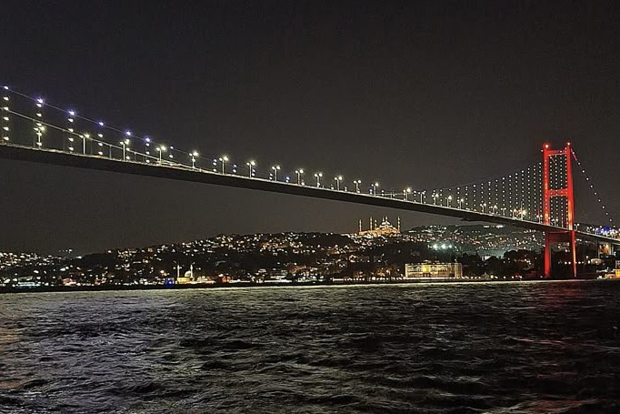
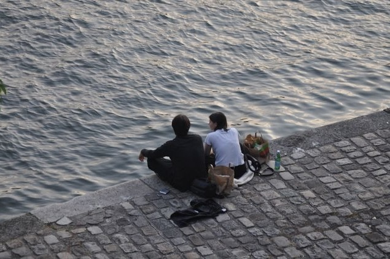
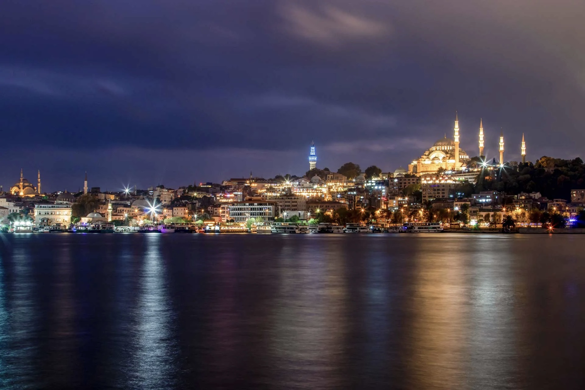
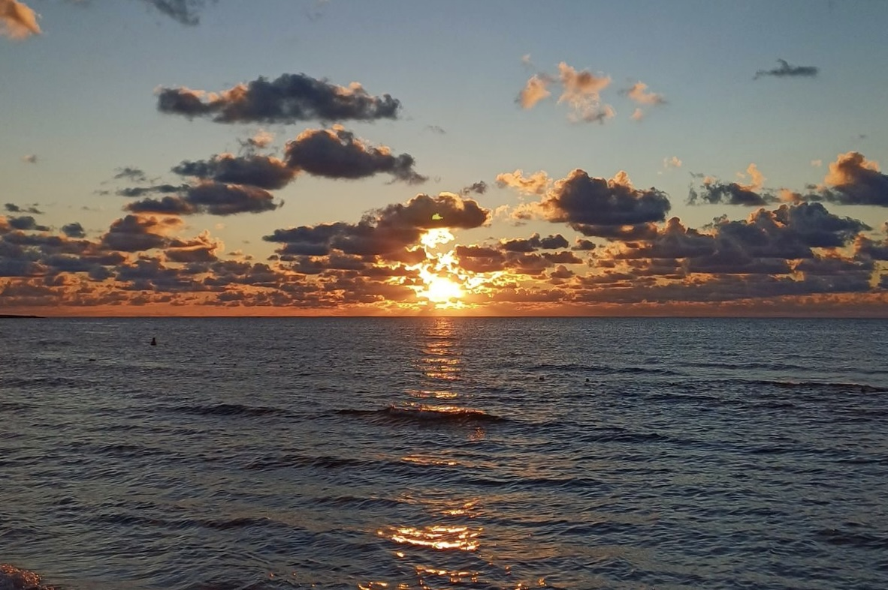
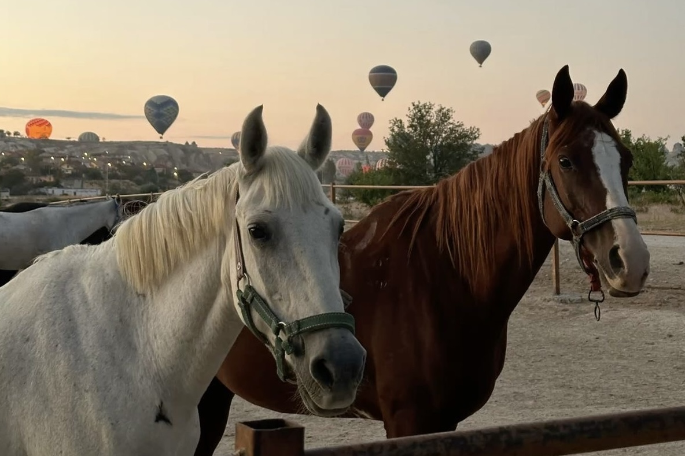
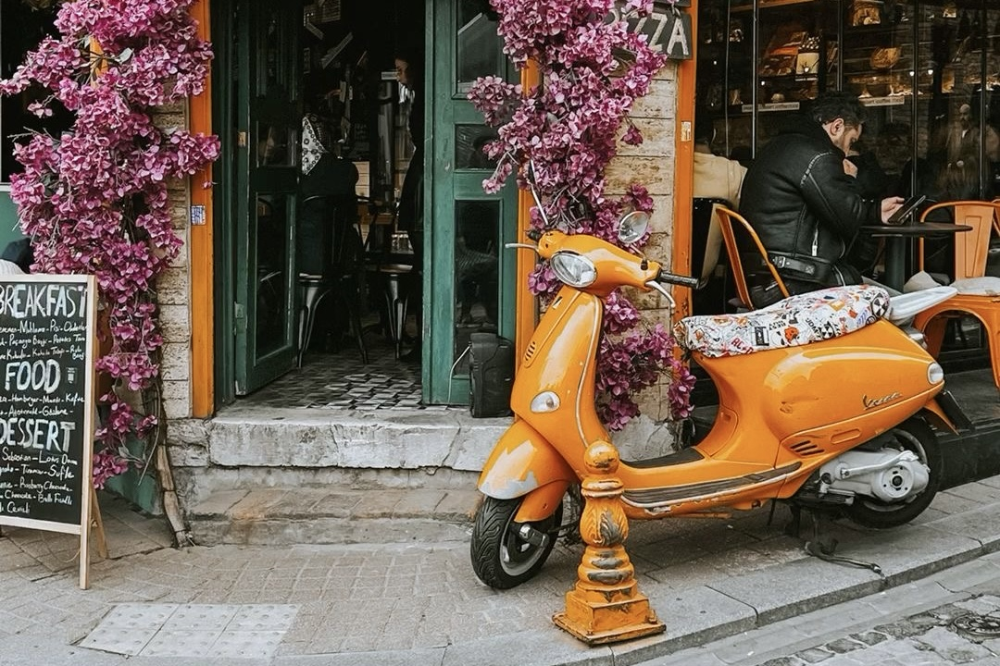
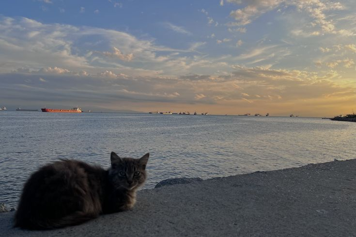
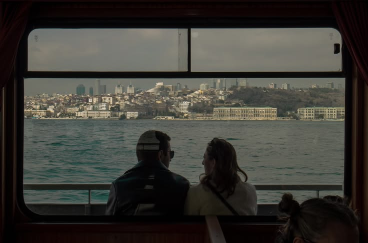
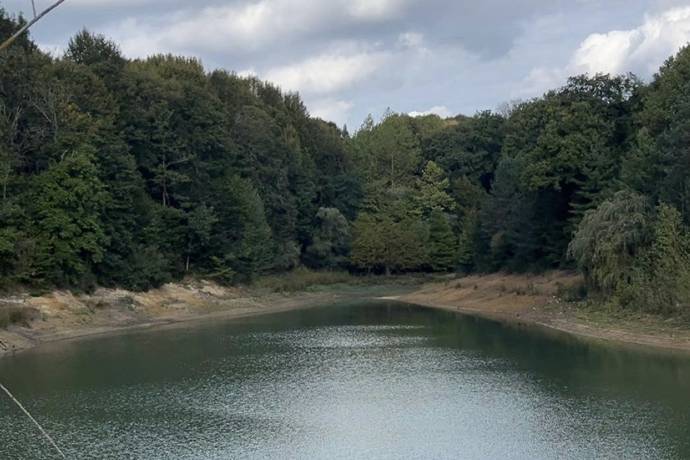
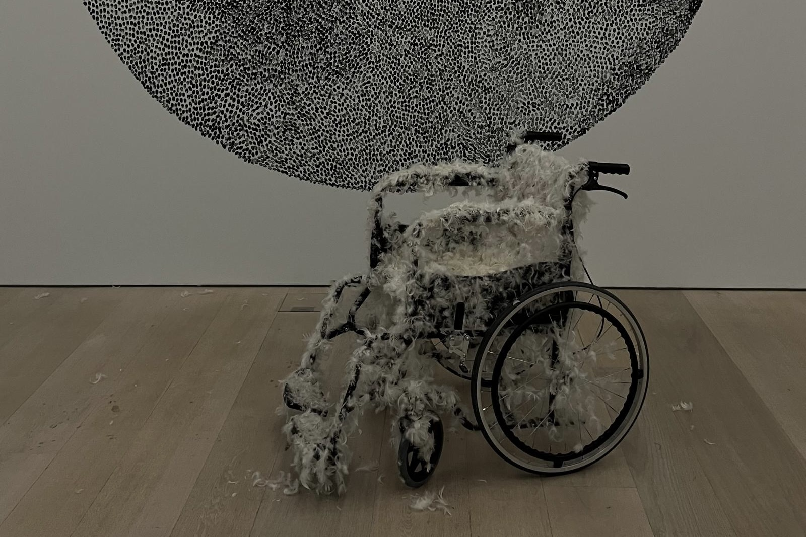

YAĞMUR BAYANSALDUZ @yagmurbynsldz
Her fotoğraf, yeniden hissedilecek bir hikayenin başlangıcıdır
Read MoreHer fotoğraf, yeniden hissedilecek bir hikayenin başlangıcıdır
Read MoreHayat akarken yakalanan anlar

Dalgaların üzerinde kırılan ışıklar, İstanbul’un iki kıta arasındaki zamansız bağını görsel bir şiire dönüştürüyor. Şehrin yamaçlara yayılan ışıkları ise gecenin içinde yaşayan bir kalp atışı gibi hissediliyor.

Suyun kıyısında yan yana oturan iki kişi, akşamın sakinliğini birlikte paylaşıyor. Şehrin gürültüsü geride kalıyor. Bu kare, sıradan bir anın içindeki sade ve gerçek yakınlığı anlatıyor.

Kıyı boyunca uzanan ışıklar şehrin nabzını hissettiriyor.Tarih ve modern hayat aynı kadrajda buluşuyor, gökyüzü derinleştikçe siluet daha da belirginleşiyor. Durgun su, bütün bu ihtişamı sessizce yansıtıyor.

Güneş ufka veda ederken gökyüzü ve deniz aynı renkte buluşur. Dalgaların üstüne düşen o son ışık, günün tüm yorgunluğunu sessizce alıp götürür. Bazı vedalar bile huzur taşır.

Günün henüz uyanmadığı o anlarda, her şey daha sakin ve daha gerçek görünür. Atların sessiz bekleyişi, gökyüzünde süzülen balonlarla birleşir. Zamanın yavaşladığı bu an, huzurun en doğal halini içinde taşır.

Dar bir sokakta, bir anda karşına çıkan canlı renkler… Turuncunun enerjisi, çiçeklerin zarafetiyle birleşir. Şehir bazen en güzel anlarını, böyle küçük ve sıcak detaylarda saklar.

Günün son ışıkları denizin üzerine usulca serilirken, kıyıda sessiz bir izleyici… Dalgaların ritmiyle akan zaman, huzurun en sade halini fısıldıyor. Bazen en güzel anlar, hiçbir şey yapmadan izlediklerimizdir.
Güneş ufka veda ederken gökyüzü ve deniz aynı renkte buluşur. Dalgaların üstüne düşen o son ışık, günün tüm yorgunluğunu sessizce alıp götürür. Bazı vedalar bile huzur taşır.
Günün henüz uyanmadığı o anlarda, her şey daha sakin ve daha gerçek görünür. Atların sessiz bekleyişi, gökyüzünde süzülen balonlarla birleşir. Zamanın yavaşladığı bu an, huzurun en doğal halini içinde taşır.
Dar bir sokakta, bir anda karşına çıkan canlı renkler… Turuncunun enerjisi, çiçeklerin zarafetiyle birleşir. Şehir bazen en güzel anlarını, böyle küçük ve sıcak detaylarda saklar.
Günün son ışıkları denizin üzerine usulca serilirken, kıyıda sessiz bir izleyici… Dalgaların ritmiyle akan zaman, huzurun en sade halini fısıldıyor. Bazen en güzel anlar, hiçbir şey yapmadan izlediklerimizdir.

Denizin ortasında, kalabalıktan uzak ama şehrin tam kalbinde… Ufka karşı paylaşılan bir an, kelimelere ihtiyaç duymadan anlatır her şeyi. Manzara değişir, zaman akar ama bazı anlar hep aynı sıcaklıkta kalır.

Şehrin gürültüsünden arınmış, sadece rüzgarın ve suyun sesinin duyulduğu bir an. Bu kare, doğanın sunduğu en saf haliyle, yeşilin binbir tonunu tek bir yansımada birleştiriyor. Sadelikteki ihtişamı hissetmek isteyenler için bir durak noktası.

Bu fotoğraf, Banksy’nin eleştirel bakışını simgeliyor. Tüylerle kaplanmış tekerlekli sandalye, hafiflik ve kırılganlık üzerinden toplumun görmezden geldiği gerçekleri sorgulatıyor. Sessiz ama güçlü bir mesaj taşıyor.
Tüm fotoğraflar yüksek çözünürlükte hazırlanmıştır. Fotoğraflar, kategoriler halinde organize edilmiştir. Şehir manzaraları, doğal detaylar ve günlük yaşam hikayeleri. Siteyi gezmek için menüden ilgili kategorileri seçebilirsiniz.
Bu portfolyo, şehir ve doğal ortamlarda çekilmiş sokak fotoğraflarını sunar. Günlük yaşam, kentsel detaylar ve doğal elementelirin kesişim noktalarına odaklanır. Fotoğraflar, kişisel çaloışmalar ve profesyonel projeler için referans niteliği taşır.
Sorularınız, iş teklifleri veya projeler için aşağıdaki formu kullanabilirsiniz
yagmurphotografy12@gmail.com instagram.com/yagmurbynsldz